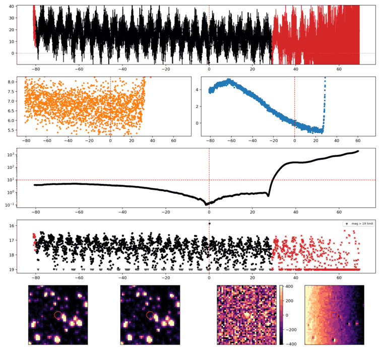
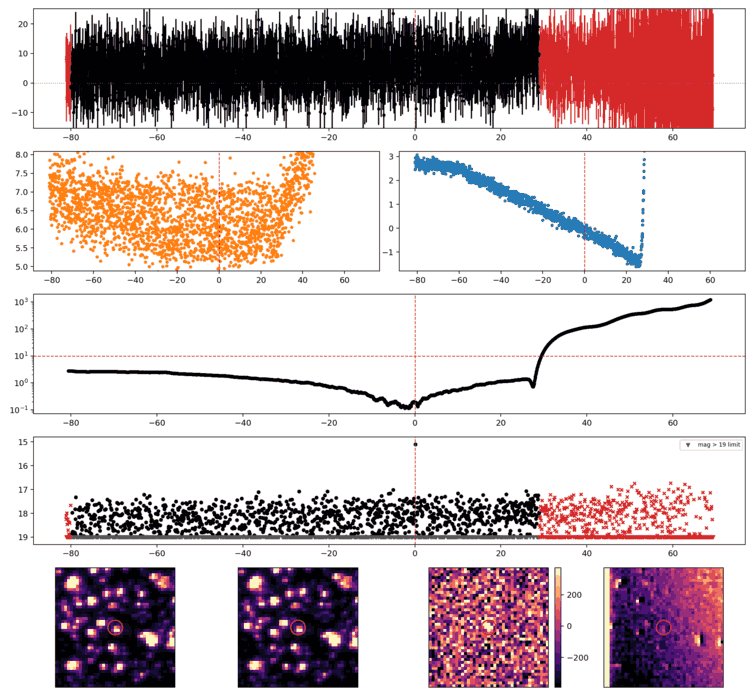
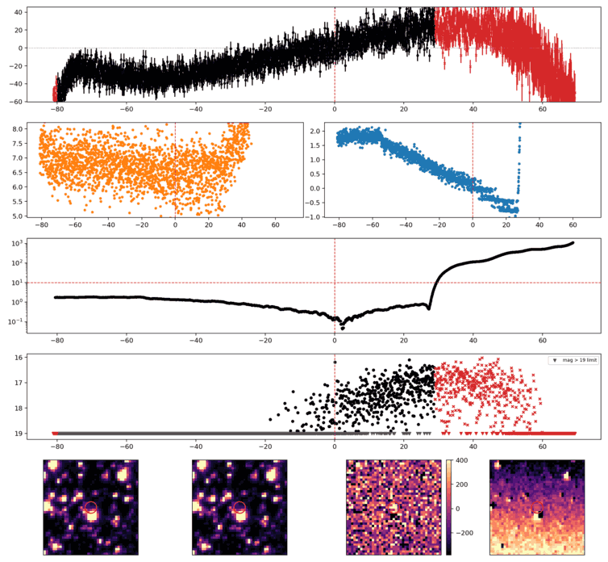

Search centered on refined position (311.5195046, -62.3191894 deg). Gaia coordinates are at J2016.0; proper motions are shown, without epoch propagation. A positional match does not change the candidate flags.
No Gaia DR3 sources found within 5 arcseconds.
Retrieved 2026-10-09T18:26:37.494674+00:00

Search centered on refined position (290.6821291, -62.0162090 deg). Gaia coordinates are at J2016.0; proper motions are shown, without epoch propagation. A positional match does not change the candidate flags.
No Gaia DR3 sources found within 5 arcseconds.
Retrieved 2026-10-09T18:26:47.769667+00:00

Search centered on refined position (281.2680043, -67.4995636 deg). Gaia coordinates are at J2016.0; proper motions are shown, without epoch propagation. A positional match does not change the candidate flags.
No Gaia DR3 sources found within 5 arcseconds.
Retrieved 2026-10-09T18:26:55.453173+00:00